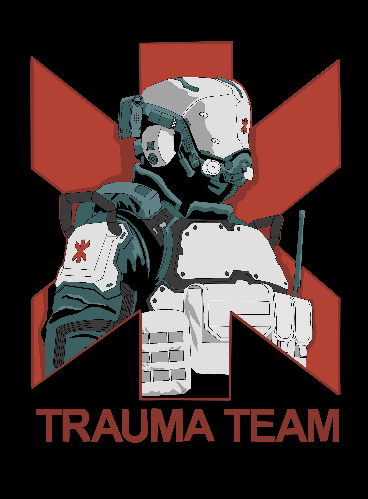
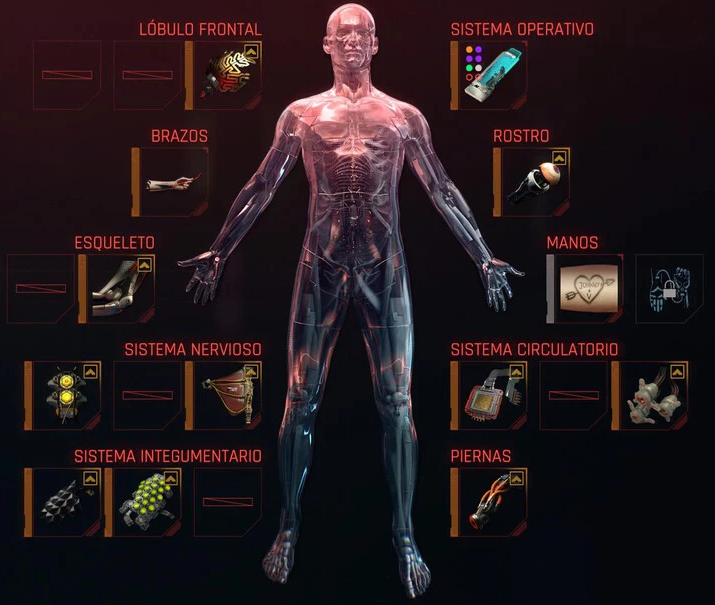
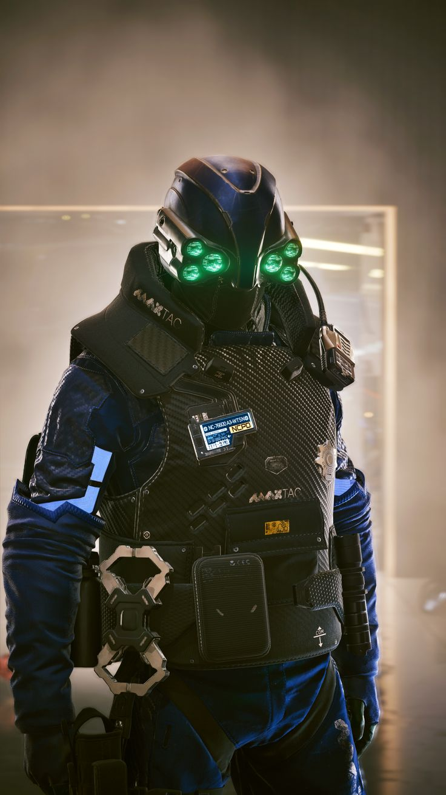

Trauma Team

¡Traido hacia ustedes por parte del querido grupo de Trauma Team! Ellos llegaran en cuestion de minutos a salvar tu vida (Siempre y cuando estes subscripto y tengas los €$ para pagarles, claro)
¡Te damos la bienvenida a la pagina oficial de Night City!
Aqui podras tener un pequeño y ligero vistazo a lo que nuestra hermosa ciudad te puede ofrecer

¡Traido hacia ustedes por parte del querido grupo de Trauma Team! Ellos llegaran en cuestion de minutos a salvar tu vida (Siempre y cuando estes subscripto y tengas los €$ para pagarles, claro)

¡Te puedes implantar en nuestras mejores clinicas corporativas cortesia de Arasaka! (O puedes tambien ir a un matasanos y correr el riesgo de volverte un cyberpsicopata, aqui no juzgamos)

Night City cuenta con una de las mas increibles fuerzas de seguridad de toda N.U.S.A, la devastadora MaxTac se encarga de lidiar con todos los cyberpsicopatas que rondan por nuestra bella ciudad